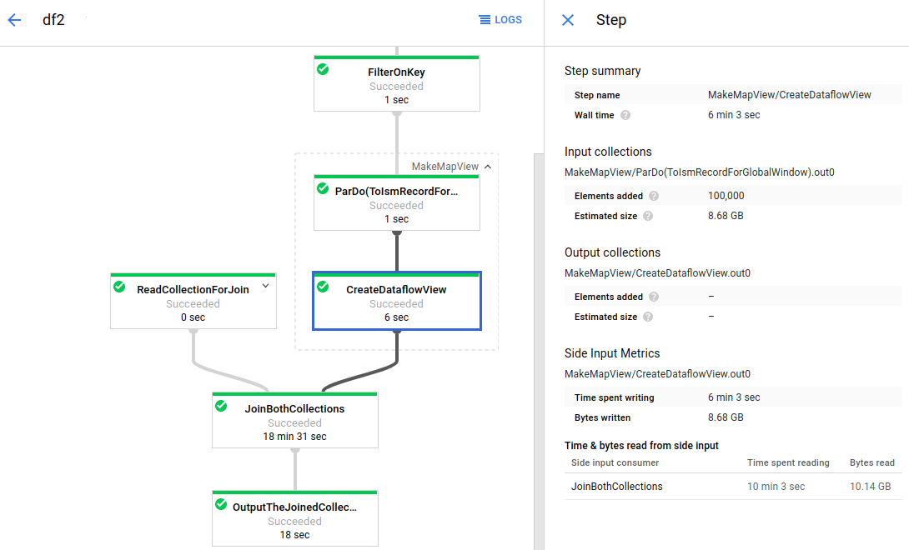

Beam は、並列処理パイプラインの定義を容易化するためのオープンソースです。
特徴は以下の通り。
並列処理のためのロジックが実装不要 処理を行うワーカー (マシン) へのデータ配分等、物理的な処理はライブラリ側で自動的に行われる → データ処理のロジックのみに専念することが可能バッチ/ストリーミングの両方に対応 バッチ、ストリーミングパイプラインの両方を実装でき、Beam の仕掛け上ほぼ同じ要領でコーディング可能対応データソースが多い ローカル PC, GCP/AWS の各種ストレージサービスなど、様々なデータソースへの接続がサポート1ポータビリティ ソースコードの変更無しに、様々なプラットフォーム上で実行可能2Beam では、並列処理パイプラインの実装を容易化するため、いくつかの抽象的な Beam に固有の概念を使います。
PipelinePCollectionPTransformI/O transformパイプラインの定義は、上記概念に沿って行うことになります。
データの読み込み、変換、出力までの一連のタスクをひとまとめにした概念が Pipeline です。
Pipeline を作成する際、行うタスクのみでなく、パイプライン実行時に受け付けるオプション (読み込むファイルの名前等) の定義も行います。
データ変換処理の適応対象となる、(分散)データセットのことを PCollection といいます。
分散処理の特性上、PCollection 内の要素順序は制御ができません。そのため、各要素は “等価” となることが望ましいです。
データサイズが有限 (処理実行時に全てのデータが揃っている) かどうかという意味で、バッチとストリーミングで扱うデータの性質は異なります。
Beam はどちらも PCollection として扱うものの、集計のような (データセット全体が対象となる) 処理を行う場合は、サイズが有限かどうかの区別が必要となります。
サイズが有限の PCollection は bounded、無限であるものは unbounded といいます。
Pipeline における各処理のステップが PTransform です。
Beam SDK に組み込まれている PTransform は数多くありますが、ユーザ定義の処理を行う PTransform を作ることも可能です。
PTransform の基本動作としては、PCollectionを入力として受け取り、処理結果を PCollection として出力します。
データストレージへの入出力を行う PTransform となります。
I/O transform は一連の処理フローの先頭、または末尾にのみ記載可能です。
(PCollection を入力 / 出力がないという意味で、少し特殊な PTransform なため)
メモ 上の制約から、「テキストファイルから処理するファイルのパスを動的に取得し、取得したファイルパスからデータを読み取る」といった処理は作りづらいです。 入出力を可変にするならば、
Pipelineの実行時オプション経由で指定する方が簡単です。
Beam プログラミングの目標は、下図のグラフ (Pipeline graph といいます) のような、一連の処理フローをソースコードへ落とし込むことです。

https://cloud.google.com/dataflow/docs/guides/using-monitoring-intf#side_input_metrics
コーディングレベルで、Pipeline graph を作る流れを説明します。
まずは、Pipeline クラスをインスタンス化します。
パイプライン実行時に受け付けるオプション引数の定義も、この段階で行います。
Pipeline インスタンスに I/O Transform を適用させ、処理対象のデータを取得方法を定義します。
これにより、Pipeline インスタンスに紐付いた PCollection インスタンスが得られます。
(※ ソースコードに記載した値を使い、PCollection を作ることも可能)
得られたデータセット (PCollection) にデータ変換 (PTransform) を適用させ、新たなデータセットを作ることを繰り返し、目的の変換データを作ります。
入力の PCollection を介して、出力の PCollection も特定の Pipeline インスタンスに紐付きます。
Beam SDK に組み込まれている PTransform で行えるデータ変換を、大雑把に触れておきます。
※ Beam SDK の標準メソッドで対応できないデータ処理が必要な場合は、ユーザ定義の変換処理を定義します
PTransform 適用させて得られた PCollection に対して、 I/O transform を使い、データ出力先 / 出力方式を定義します。
出力方式についてですが、ファイル出力を例に取ると、出力ファイルの分割数や、ファイル圧縮等の指定が行えます。
ここまでで、目的の処理フローが定義された Pipeline インスタンスが出来ていることになります。 この Pipeline インスタンスのメソッド run を呼び出すことで、処理が起動されます。